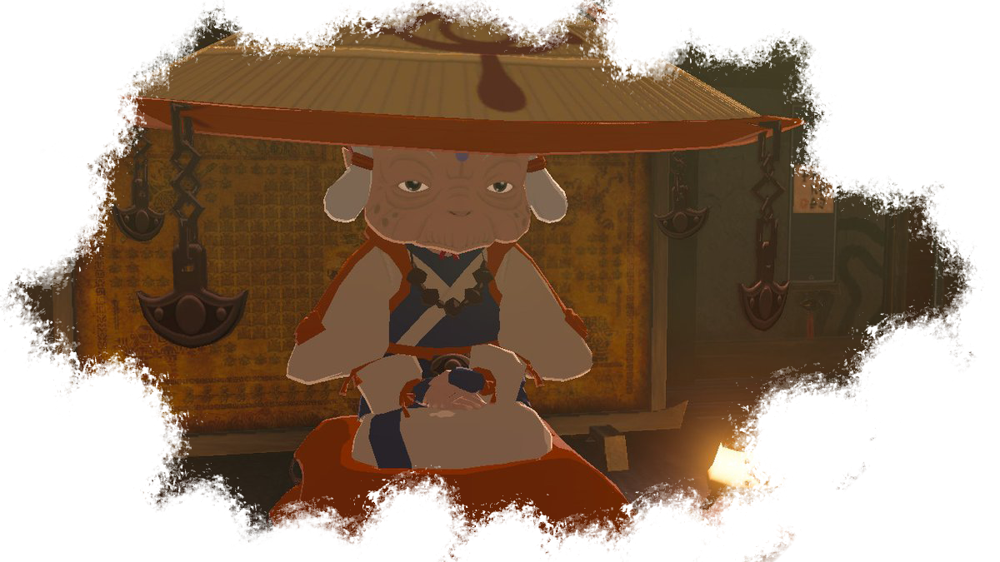
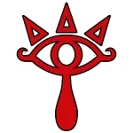
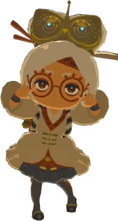
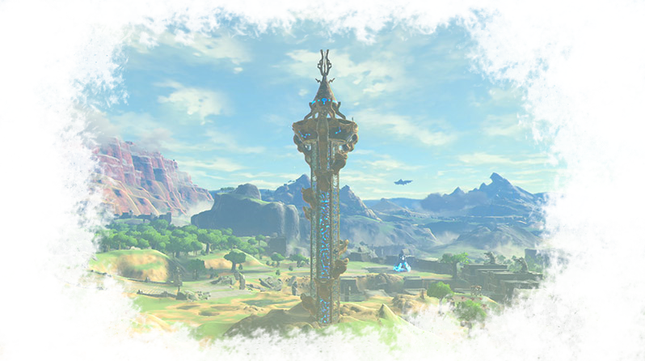
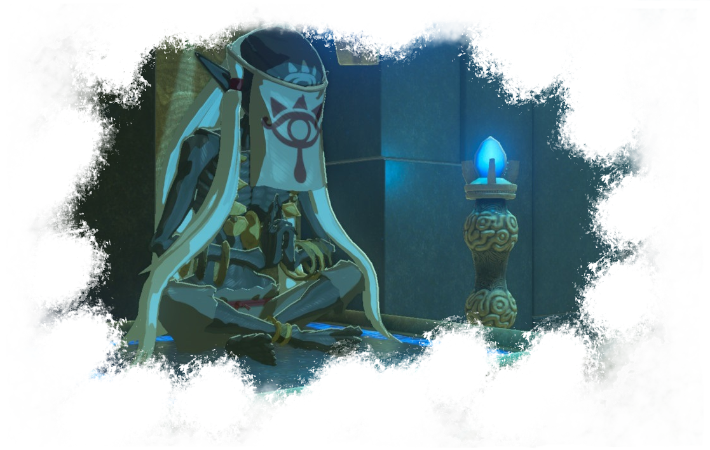
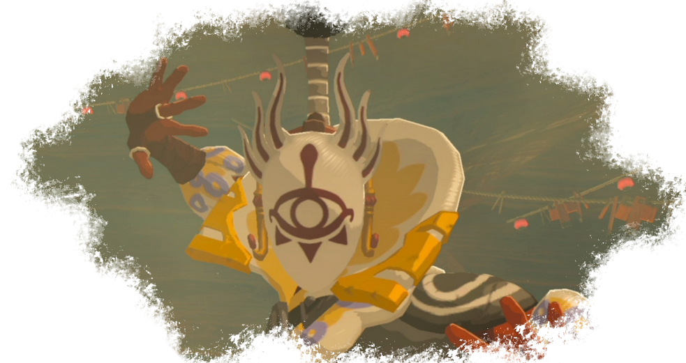

Les Sheikahs

Les Sheikahs sont un peuple mystérieux. Physiquement, ils ressemblent beaucoup aux hyliens. Ils ont des oreilles pointues, sont généralement plutôt grands, ont tous les cheveux blancs et vivent très vieux. Impa par exemple a vécu plus d'un siècle et semble toujours en très bonne santé.

Les sheikash ont un symbole: un oeil versant une larme surmonté de trois triangles.La signification de ce symbole demeure un mystère, mais il est très présent dans leur culture et est souvent gravé sur leurs créations.
Les Sheikahs sont au service de la famille royale, qu'ils servent de manières diverses et variées. Certains sont des guerriers capable de se fondre dans les ombres, d'autres au contraire sont des scientifiques. Une chose est sûre: les sheikas maîtrisent une magie qui leur est propre et sont capable de jouer sur tous les fronts.
Les sheikahs, bien que parfois considérés comme des illuminés ou incompris par les autres races, sont bien intégrés à la société hylienne. Le village Cocorico est essentiellement habité par des sheikahs. Mais certains vivent ailleurs, souvent un peu en retrait des villages peuplés par des hyliens. Enfin, certains sont des nomades.

Ce peuple mystérieux a probablement donné naissance aux concepteurs les plus incroyables de la région. Ce sont eux, qui, il y a des millénaires, ont pu créer toute cette technologie incroyable qui est aujourd'hui au centre des intrigues de Link. Ils ont créés les gardiens bien sûr, ainsi que les créatures Divines, mais également la tablette Sheikah.
Ils ont également conçu des merveilles autant architecturales que scientifiquestelles que les tours qui permettent à la tablette d'enregistrer la topographie de la zone, l'incubateur qui a permis à Link de revenir à la vie, et bien évidemment les temples qui servent d'épreuves au héros choisi par la lame purificatrice.

Aux prémices du monde tel qu'on le connaît, les sheikahs étaient au service de la Déesse Hylia elle-même. Aujourd'hui encore, ils servent Hylia en servant Zelda et la famille royale. Les moines chargés de guider Link sont nombreux et montrent bien à quel point la religion est importante dans la culture de ce peuple qui a placé le mysticisme et la magie au centre de ses habitudes.

Toutefois, certains membres issus du peuple sheikah ont choisi de ne pas suivre la voie de la Déesse Hylia. Au contraire, ils se mettent au service de Ganon et trahissent leurs frères. Cette communauté parallèle se fait appeler le clan Yiga.
Dirigés par celui qui se fait appeler Le Grand Kohga, ce groupuscule met tout en oeuvre pour traquer et assassiner Link. Ils usent de leur magie, de leur maîtrise martiale et de leurs talents à l'arc pour combattre le héros et sont même capable de prendre l'aparence de civils innocents pour tromper le jeune homme.
Plus que Link, les Yigas traquent tous ceux qui s'opposent au fléau, et tout particlièrement les sheikahs pacifiques qui continuent de servir les intérêts d'une famille royale pourtant disparue.

Les Yigas ont une base cachée dans un repère secret, perdu dans le désert, pas très loin de la cité Gerudo. Link devra y aller pour défaire leur chef et ainsi reprendre le masque du tonerre, relique sacrée appartenant au peuple du désert.
La résurection de Ganon, et surtout sa prise de contrôle sur les machines sheikahs a coûté la vie à beaucoup d'entre eux. Aujourd'hui, les Sheikas, aussi bien pacifiques qu'hostiles, ne sont plus nombreux. Ce peuple de l'ombre n'est plus que l'ombre de lui-même. Pourtant, il continue de briller.